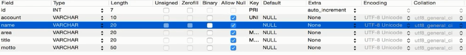
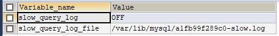
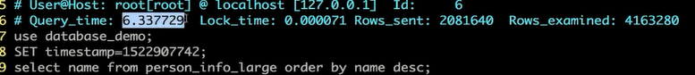
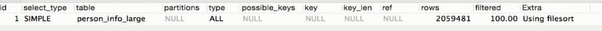
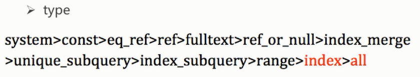
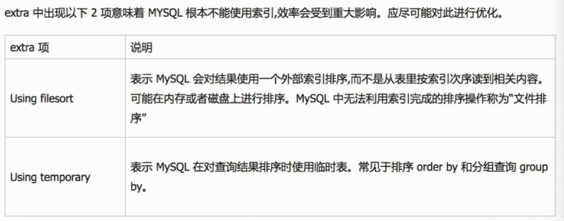
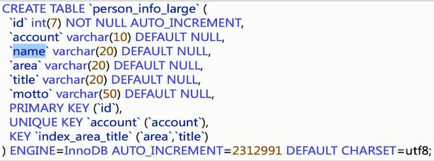
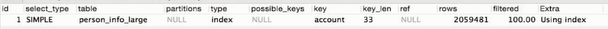

模拟一次简单的sql调优
调优sql步骤
准备工作：创建表person_info_large,其字段设计如下：

向表中灌入200万条数据，用来显示sql调优过程。
根据慢日志定位慢查询sql
show variables like "slow_quer"
mysql默认把慢查询关闭，需要手动开启

SHOW STATUS LIKE "%slow_q%"
通过上述指令可以查询本次连接的慢查询条数
通过set global slow_query_log=on;set global long_query_time=1;指令可以设置慢查询日志开启，并将慢查询时间阈值设为1秒（指令设置只能针对本次连接，重启数据库这些设置都会被重置，除非修改配置文件，例如：windows的my.ini）
执行select name from person_info_large order by name desc;数据库花费了6秒多才将数据查出，超过了1秒的限制，被作为慢查询记录在本地的slow_query_log_file文件中。

使用explain select name from person_info_large order by name desc；对此条慢sql语句进行分析，其中，type字段值为ALL，表明此sql查询为全表扫描（index、all表示全表扫描），

type字段含义： extra字段含义：

修改sql或尽量让sql走索引

标准的name字段并没有设置为索引，用account字段来查询明显会比name字段来得好，可以通过explain select account from person_info_large order by account desc；可以发现此sql查询会走索引，并且速度比不走索引快了2秒多；
- 当然也可以给name字段加一个索引，使用alter table person_info_large add index idx_name(name)命令;再执行explain select name from person_info_large order by name desc；最后执行select name from person_info_large order by name desc；查询速度比不走索引快。
执行select count(id) from person_info_large;发现并没有走id索引，而是走了account索引；执行select count(id) from person_info_large force index(primary) ;对比后发现使用account索引查询更快；mysql的查询优化器，尽可能使用索引，消除更多数据行。
